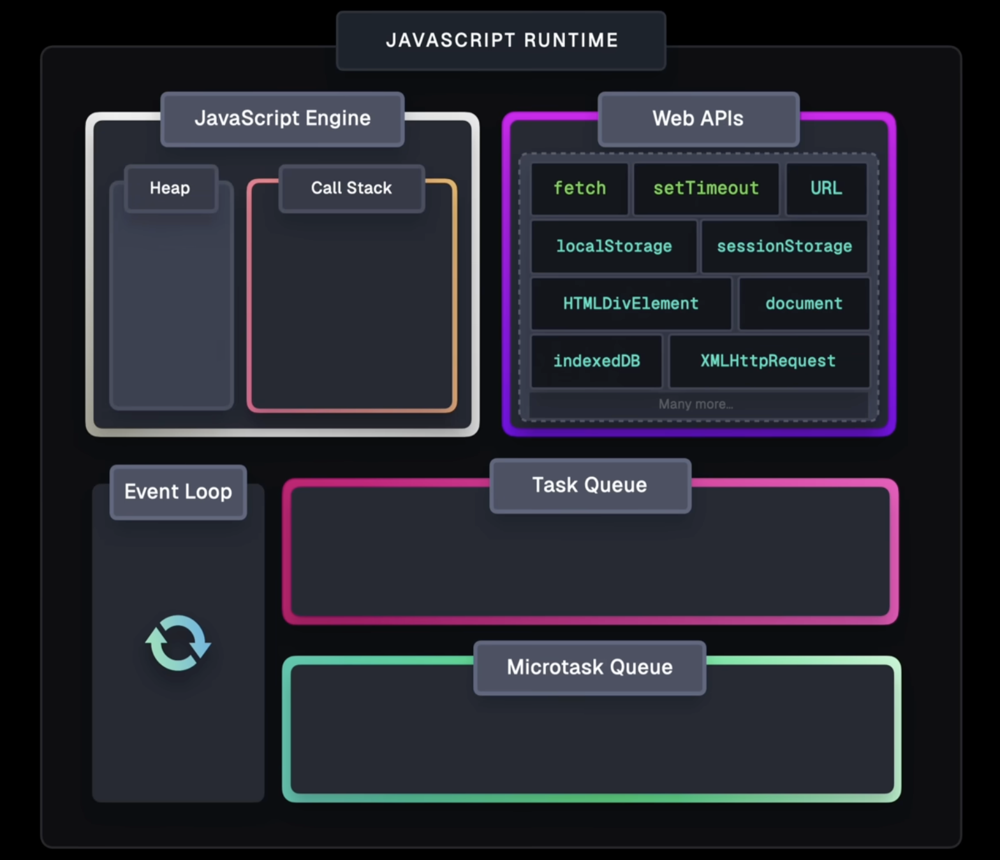

JavaScript is single-threaded, meaning it can execute one piece of code at a time in a single call stack. However, it supports asynchronous operations (e.g., timers, network requests) without blocking the main thread. The event loop is the mechanism that enables this non-blocking behavior by managing execution and handling asynchronous callbacks.
setTimeout(), DOM events,
and network requests (like fetch or file I/O)..then, .catch,
.finally), function body execution following await,
queueMicrotask, and MutationObserver callbacks.
setTimeout or DOM events)
by pushing its callback onto the call stack.JavaScript is single-threaded, meaning it executes one task at a time on its call stack. When an asynchronous operation is initiated via browser-provided Web APIs, the initial function call runs on the call stack, but the actual asynchronous work happens in the background, so the call stack remains unblocked. Once the async operation completes, its callback is placed in the task queue (for most callbacks) or the microtask queue (for Promise handlers, async/await continuations, queueMicrotask, and MutationObserver). The event loop continuously processes tasks from the task queue but always prioritizes emptying the microtask queue first, ensuring microtasks run immediately after the current task completes and before moving on to the next task. This mechanism allows JavaScript to handle asynchronous behavior efficiently without blocking the single thread.
In addition, the browser provides various Web APIs (such as setTimeout(), DOM APIs,
fetch(),
localStorage, and others) that extend JavaScript’s capabilities beyond the core engine. Callback
functions
and event handlers are stored in the Web API environment and transferred to the appropriate queues when ready.
Event listeners remain in the Web API environment until explicitly removed to avoid memory leaks. The event loop
ensures that asynchronous callbacks from these queues are executed in an orderly fashion, with microtasks taking
precedence over macrotasks, enabling efficient and non-blocking execution of JavaScript code.
Q: Does the Web API environment store only the callback function and push the same callback to the callback or microtask queue?
A: Yes, the Web API environment stores the callback functions and schedules references to them in the appropriate queues. In the case of event listeners (such as click handlers), the original callback functions remain stored in the Web API environment indefinitely. Therefore, it is important to explicitly remove event listeners when they are no longer needed to allow the garbage collector to free up memory effectively.